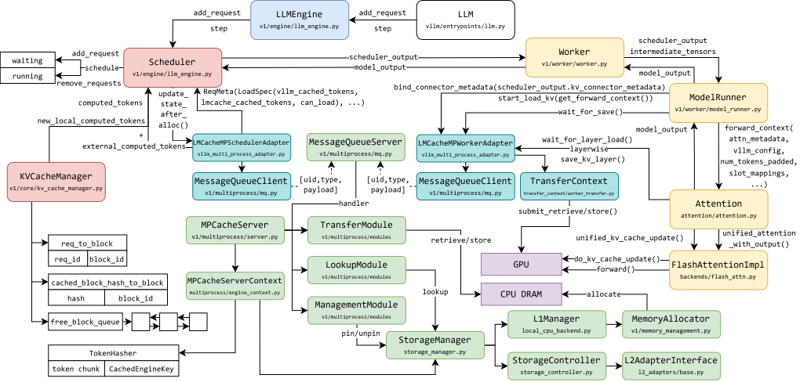
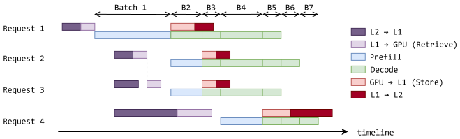

LLM serving simulation for hierarchical KV-cache systems
When a language model serves a conversation, it stores keys and values for tokens it has already read. That KV cache is what lets the next token skip recomputing the whole prompt. vLLM is a serving stack built around this. Requests wait in a queue. A scheduler chooses which tokens run in the current batch. The cache lives in GPU memory, in pages, so many requests can share the device.
The cache still outgrows the GPU. LMCache keeps it in layers: GPU memory, then CPU memory, then storage farther away. A later request that repeats an earlier prompt can fetch those layers back. The traffic is per layer. Stored cache moves from L2 into L1 and then onto the GPU before prefill, and new cache is written back after decode.

What the simulator keeps real
vLLM-Sim is a simulator built around that stack. I am extending it, with Shiyi Liu and advised by Prof. Yuan Xie, so the hierarchical cache can be studied without placing every experiment on the full machine.
The simulator leaves the vLLM frontend unchanged and swaps the hardware backend for a simulated one. Scheduling and memory decisions stay the ones the real stack would make. To look at those decisions on their own, I first wrote a small vLLM platform plugin that records a trace and replays it. In one run you can separate scheduling, memory management, model execution, and the hardware underneath.

Timing copies that are not really copied
On a real machine, LMCache allocates CPU and GPU memory and copies between them. A simulator still has to give those copies a duration, and it still has to make later work wait for them. I pointed the KV-cache operations at simulated storage and timed each CPU-to-GPU transfer from profiled bandwidth. Dependent execution starts only when the matching transfer has finished on the simulator’s virtual timeline. I also adjusted the backend worker and the profiling path so this overlap survives: the scheduler can stay ahead of the GPU, as it does on the real server.

The integration runs. I am comparing it with a real system on time to first token, time per output token, and end-to-end latency, across workloads and memory setups. That comparison is still underway, so this page stops short of a fidelity result.